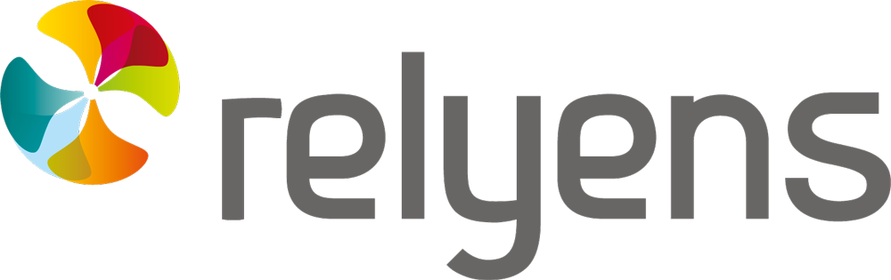
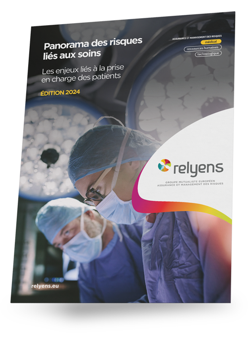

Scarica il Panorama dei Rischi 2024 e scopri le soluzioni più innovative per la gestione del rischio clinico in sanità. Un'analisi completa e strumenti pratici per garantire un futuro più sicuro per pazienti e operatori sanitari.

Un'analisi approfondita per una sanità più sicura
Esplora i temi più rilevanti per la gestione del rischio clinico in sanità con il Panorama dei rischi 2024.
Il nostro studio si basa sull’analisi di oltre 2.164 sinistri gestiti nel 2023, offrendo soluzioni concrete per la prevenzione e il risk management in sanità, con un focus su rischi come errori diagnostici, errori chirurgici, infezioni correlate all'assistenza (ICA) e minacce cyber.


Scarica il Panorama dei Rischi 2024
Compila il form e ricevi il white paper direttamente nella tua casella di posta.
Cosa troverai all’interno del Panorama
-

Errore diagnostico
Una diagnosi corretta è essenziale per la sicurezza del paziente. Scopri come prevenire gli errori diagnostici analizzando i principali fattori di rischio.
-

Errore chirurgico
Gli interventi chirurgici rappresentano un'area ad alto rischio. Analizziamo le soluzioni pratiche per migliorare l’esito degli interventi.
-

Infezioni correlate all’assistenza (ICA)
Le infezioni ospedaliere sono una sfida, ma interventi mirati possono ridurne l’incidenza. Scopri i fattori di rischio e le soluzioni efficaci.
-

Rischio cyber in sanità
Proteggere i dati dei pazienti è una priorità: esplora le soluzioni per rafforzare la sicurezza informatica e prevenire attacchi cyber.
-
Eventi avversi nel percorso chirurgico
Analizziamo gli eventi avversi più significativi e proponiamo azioni per migliorare la sicurezza del paziente lungo il percorso chirurgico.
-

Soluzioni tecnologiche per il blocco operatorio
Scopri come l'integrazione delle tecnologie digitali può migliorare la gestione del rischio e la sicurezza in sala operatoria.